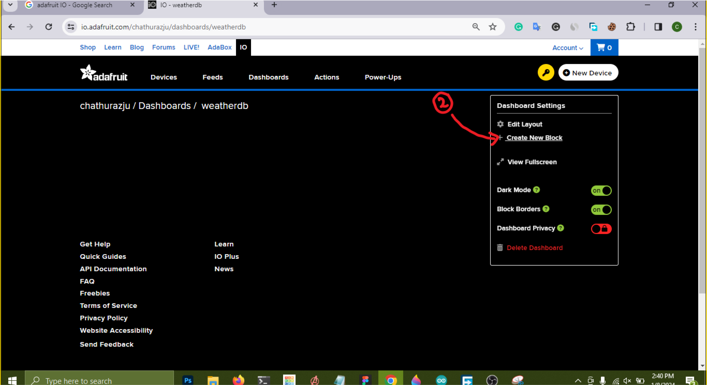

IoT devices can communicate with each other and with other
internet-enabled devices, creating a vast network of interconnected
devices that can perform a variety of tasks autonomously.
In this blog, we will explore how to connect with IoT devices using a
laptop and a cloud service.
Assessment objectives covered in this section
Connect NodeMcu with IOT
Required Components
ESP32 - NODEMCU
4 LEDs.
4 220 ohm Resistors.
Jump Wires.
DHT11 temperature and humidity sensor.
Bread Board.
IOT Cloud Account ( in this case Adafruit IO)
Creating adafruit IO Account
Go to Adafruit IO and click on get started for free.
Fill Your Information and click on create account
Adafruit IO Home
After signing up you will receive a screen like this. if you dont
see the same screen , click on the IO on the top bar. We are going
to use feeds and dash boards.
Feeds:
Feeds are like data channels where devices can publish information
or subscribe to receive data. They serve as a way to send and
receive data to and from connected devices.
Dashboard:
The Adafruit IO dashboard is a customizable interface that allows
users to visualize and control their connected devices. It provides
widgets that display real-time data from feeds, enabling users to
monitor and interact with their IoT projects.
Creating a feed
First go to feeds --> Click on New Feed --> fill the details in
pop up box --> and click Create.
Creating a Dashboard
Click on Dashboard --> Click on New Dashboard --> Fill up the
pop up feed --> Click Create
Adding Blocks to the dash board
GO to Dashboards --> Click on the dash board that you want to edit
--> Click on the gear Icon to get the dash board settings -->
Click on create new Block --> Choose a block --> Connect a feed
or feeds to your block --> edit block parameters accordingly -->
Click finish

Sending Data From ESP32 to Adafruit IO
CODE Breakdown
Libraries
WiFi and Adafruit IO Configuration
MQTT Client Initialization
Function to Connect to WiFi
Function to Connect to MQTT Broker (Adafruit IO)
setup() Function
This function is called once when the device boots up and contains the
setup code, including initializing the serial communication,
connecting to WiFi, and any other necessary setup.
loop() Function
This function is continuously executed in a loop after the setup()
function. Here, the program checks for the MQTT connection, obtains
data (or generates some sample data), and publishes it to an Adafruit
IO feed.
Sending Data to Adafruit IO
Full Code
Receiveing Data From Adafruit IO to ESP32
CODE Breakdown
Libraries
WiFi and Adafruit IO Configuration
Adafruit IO Initialization
setup() Function
This function is called once when the device boots up. It initializes
the serial communication, connects to WiFi, and connects to Adafruit
IO.
Connecting to WiFi and Adafruit IO
This line initiates the connection to the Adafruit IO service using
the provided credentials.